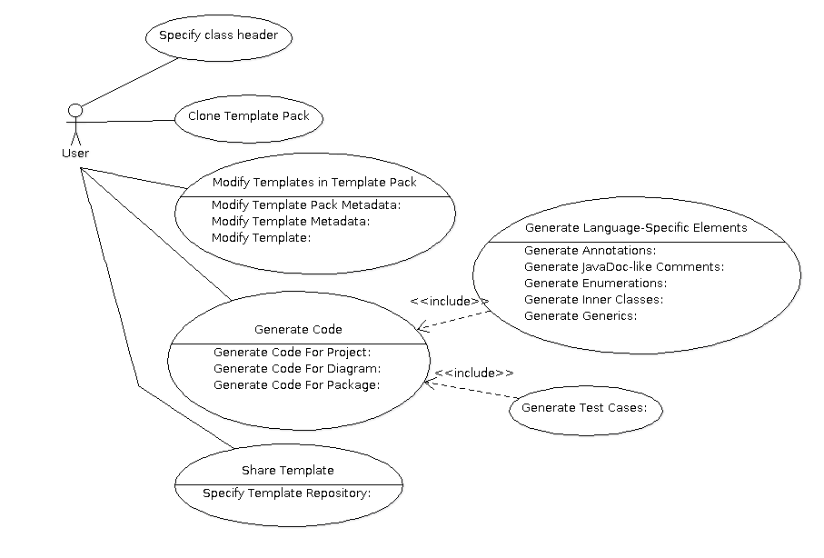
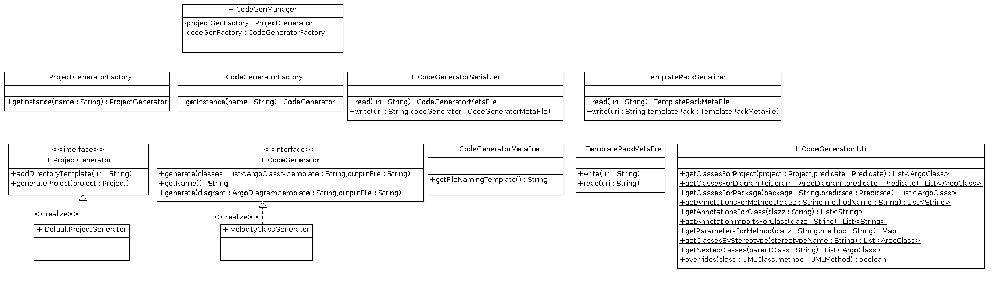

Introduction
The purpose of the Code Generation project is to provide users with a means for generating code in an easily customizable fashion. The form that code takes within a company is often standardized, and ArgoUML must be able to support the generation of code that meets a customizable coding standard.
Use Cases
Use Case Diagram

Specify class header
- The user should be able to specify a default header that can be set either as a system default, or on a project-by-project basis. The template will automatically be injected into the class when it's generated.
Clone Template Pack
- The user will be able to clone a template pack to a local or remote directory (i.e. WebDAV, S/FTP server, etc). The template pack is a zip file containing all of the templates and any associated metadata.
Share Template
- The form that code takes is often standardized within a company according to its coding standards. The user will be able to share their templates, and use a standardized templates found in a template repository.
Specify Template Repository
- The user will be able to specify a template repository. This may be a remote repository such as a WebDAV, or FTP server. The system will automatically scan the directory for templates prior to code generation.
Modify Templates in Template Pack
- The user should be able to modify any template in a template pack. The system should have a built-in editor to allow the user to edit the contents of the template in addition to the template metadata.
Modify Template
- The user will be able to modify the text of the code template itself via a built-in editor.
Modify Template Metadata
- The user will be able to edit template metadata. This metadata may include a filenaming convention specified as a template (for example "${projectRoot}/src/main/java/${package}/${classname}.java")
Modify Template Pack Metadata
- The user will be able to modify the Template Pack's metadata. These parameters will include any stereotype-dependent directory locations. This will allow the user who is generating Grails or Spring projects (for example) to generate classes and artifacts in specific directories.
Generate Code
- The user should be able to generate code. The user will be able to select a template pack and any subset of classes, and generate code from their selections.
Generate Code For Diagram
- The user should be able to generate code for all classes in a given diagram. It may be useful at some point in the future to be able to generate configuration files (like Maven POM files, and Manifest files) from a deployment diagram.
Generate Code For Package
- The user will be able to generate code for a particular package.
Generate Code For Project
- The user should be able to generate code for all classes in the project.
Generate Language-Specific Elements
Generate Test Cases:
- The user will be able to generate test cases for any subset of the project specified in the Generate Code use case.
Classes
Class Diagram

ProjectGenerator
- Implementations of this class are responsible for generating a project directory structure
Methods |
|
Name |
Description |
generateProject |
This method creates the directory structure of the project |
addDirectoryTemplate |
This method adds a directory template for the project. The directory template is used to create a directory within the project. |
CodeGenerator
- This interface defines the methods needed to generate code using a template.
Methods |
|
Name |
Description |
generate |
This method generates classes or other artifacts from a diagram. |
getName |
Gets the name of the code generator. |
CodeGeneratorMetaFile
- This class stores the metadata associated with a code generator.
Methods |
|
Name |
Description |
getFileNamingTemplate |
This method gets a file naming template used to create files. |
VelocityClassGenerator
- This class uses Velocity templates to generate classes.
CodeGenerationUtil
This class is similar to the DiagramUtil class in ArgoPrint and serves as a shim between the model and the template. It's purpose is to make it easier for template writers to access model elements in the class with simple one-line calls.
Methods |
|
Name |
Description |
getClassesForDiagram |
This method gets the classes for an individual diagram. |
getAnnotationsForClass |
This method gets the annotation names for a class. This is useful if you have class-level annotations that you want to apply. |
overrides |
This method indicates whether or not the method in a given class overrides the method from a superclass. This is used primarily to determine whether or not to generate an @Overrides annotation in Java. |
getAnnotationImportsForClass |
This method gets the fully qualified import statements for the annotations used in the class. |
getNestedClasses |
This method gets the nested classes (inner classes) for a given parent class. |
getClassesForPackage |
This metho gets the class for a package. |
getClassesForProject |
This method gets all classes found in a particular project. |
getAnnotationsForMethods |
This method gets the annotations for a given method |
CodeGeneratorFactory
- This factory is responsible for creating instances of a code generator. It uses the Java SPI facility to register code generator implementations.
TemplatePackMetaFile
- This class is used to manage the metadata associated wth a template pack. The pack is a zip file containing multiple templates.
CodeGeneratorSerializer
- This class is responsible for reading/writing Code Generator Metadata Files. These metadata files contain configuration information used to generate code from templates.
TemplatePackSerializer
- This class is responsible for reading/writing a template pack. Template packs are zip files which contain the metadata and associated template files.
DefaultProjectGenerator
- This class is the default implementation of the project generator.
ProjectGeneratorFactory
- This factory generates projects including directory structures.
CodeGenManager
- This is the central class of the framework and is responsible for managing all aspects of code generation.